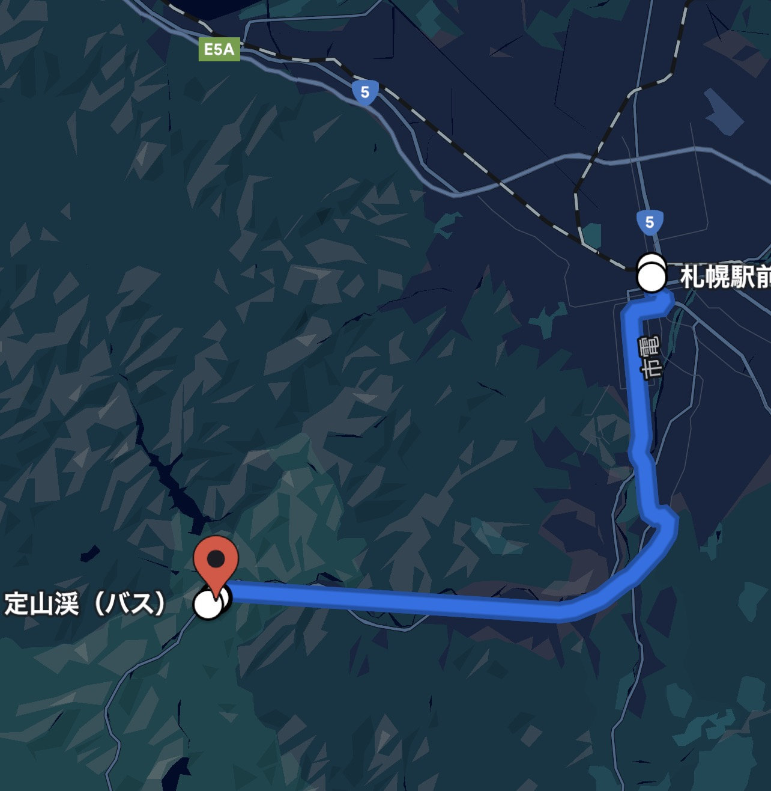

Access
交通案内
札幌近郊、定山渓温泉の静謐な高台へ。雪灯りまでの道のりをご案内します。

雪灯り
〒061-2302
北海道札幌市南区定山渓温泉東3丁目12-5
Tel. 011-598-0001
札幌中心部から車で約50分。定山渓温泉の静かな高台に佇む、雪と灯の宿です。
Google Mapsで表示By Car
お車でお越しの方
札幌中心部から国道230号経由で約50分。雪景色を眺めながら、ゆったりとお越しいただけます。
札幌中心部から
- 札幌駅 → 国道230号 → 定山渓温泉方面
- 所要時間：約50分
小樽方面から
- 札樽道 → 札幌IC → 国道230号
- 所要時間：約80分
冬季はスタッドレスタイヤの装着が必須となります。降雪時は時間に余裕を持ってお越しください。
By Bus
公共交通機関でお越しの方
札幌駅前バスターミナルから定山渓温泉行きのバスが運行しています。
札幌駅前バスターミナル
定山渓温泉行き高速バスで約70分。最寄り停留所「定山渓温泉東3丁目」から徒歩7分。
送迎サービス
事前予約制で送迎サービスをご用意しています。詳細はご予約時にお問い合わせください。
From Airport
新千歳空港から
空港から札幌市内経由で約90分。空港連絡バスのご利用も便利です。
空港連絡バス
新千歳空港 → 札幌駅前 → 定山渓温泉方面
レンタカー
空港でレンタカーを利用し、道央道経由で定山渓温泉方面へ。
駐車場・送迎のご案内
駐車場
無料駐車場15台（予約不要）。大型車をご利用の際は事前にご連絡ください。
送迎
札幌駅または定山渓温泉バス停からの送迎を承ります。前日までにご予約ください。